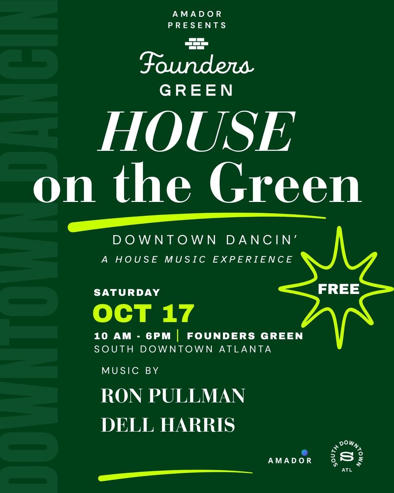

It's free. Bring your people. We're dancin'.

AMADOR, Atlanta's wellness and placemaking agency, brings movement, music, and community together for a feel-good fall day in South Downtown's Founders Green. Start the morning with yoga, then stay as we turn up the music for an open-air house music experience. Founders Green offers a beautiful lawn with plenty of seating and umbrellas throughout the space, plus an onsite cash bar and free two-hour parking.
AMADOR's free Saturday morning yoga session — the season closer. All levels welcome, bring a mat and settle into the lawn.
Blankets, seating, and umbrellas across Founders Green, an onsite cash bar, and free two-hour parking in the heart of Downtown Atlanta.
An open-air house music experience with Dell Harris and Ron Pullman, turning the Green into a dance floor to celebrate the start of fall.
Jazz Ting Radio founder and Atlanta DJ/producer, spinning soulful house for Downtown Dancin'. Fresh off the new release below — press play.
Co-headlining Downtown Dancin' alongside Dell Harris, bringing house music and energy to Founders Green all afternoon.
The official promo for AMADOR's season closer at Founders Green.
House on the Green is a free, open event for the whole community — no ticket required to attend. If you can, chip in to help cover sound, staging, and artist fees so AMADOR can keep bringing yoga and house music to Founders Green. Every bit helps us close out the season strong and plan the next one.
House on the Green draws an all-day crowd of yoga, house music, and community lovers across South Downtown Atlanta. We're inviting vendors to set up on the lawn alongside us.
Tell us about your business and we'll follow up with table details and pricing.
Apply to VendFree Saturday yoga, wellness programming, and everything else AMADOR brings to Atlanta — all in one place.
Visit the Amador Linktree